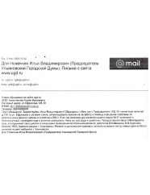
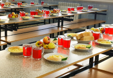

Ножечкин Илья Владимирович
Председатель Ульяновской Городской Думы, Депутат Ульяновской Городской Думы VI созыва. Член Комитета по бюджету и налогам
- Округ 29
- @NozhechkinIV1
- nozhechkin@ugd.ru
- 8422 33-55-00
Родился 10 сентября 1988 года в семье инженеров-строителей.
Окончил гимназию №33 в Засвияжском районе.
Высшее образование получил в Ульяновском Государственном Университете. В 2010 году окончил его с двумя «красными» дипломами.
В 2011 году был назначен руководителем отдела по взаимодействию с территориальным общественным самоуправлением. За первый год работы организовал 35 активных коллективов ТОС. Теперь движение ТОС объединяет более 130 000 человек, на базе ТОС восстанавливается система дворовых тренеров и массового дворового спорта, проводятся конкурсы на получение грантов, реализуются проекты благоустройства.
В 2012-2013 гг. Илья Ножечкин преподавал на курсах повышения квалификации старших по домам/председателей советов многоквартирных домов в УлГТУ и УлГУ.
В 2012 году организовал и возглавил Контакт-центр при Главе города Ульяновска, предоставляющий бесплатную юридическую помощь жителям города, прежде всего по вопросам ЖКХ, куда так же вошла созданная служба «05», которая взяла под контроль выполнение заявок от жителей всего города.
С 2014 года Илье Ножечкину доверено руководить в Ульяновской области реализацией федерального проекта «Школа грамотного потребителя», цель которого обучение жителей правовой и компьютерной грамотности. В результате региональная ШГП вошла в число лучших по стране согласно общероссийскому рейтингу.
В 2014 году избран депутатом по 22 избирательному округу в Засвияжском районе Ульяновска.
В 2015 году стал заместителем главы города и возглавил комитет по городскому хозяйству, транспорту и охране окружающей среды.
18 июля 2018 года на заседании Городской Думы избран депутатами председателем.
Инициатор законопроекта по усилению контроля за пассажирскими перевозками в Ульяновской области, который вступил в силу и позволяет лишать лицензии перевозчиков за неоднократное нарушение графика движения.
В 2019 году вошел в состав Палаты молодых законодателей при Совете Федерации Федерального Собрания РФ. Избран заместителем председателя.
В 2020 году с отличием окончил магистратуру в РАНХиГС при Президенте РФ, получил степень магистра политологии по направлению подготовки «Экономическая политология».
В 2020 году избран депутатом Городской Думы VI созыва по 29 избирательному округу в Засвияжском районе Ульяновска.
30 сентября 2020 года на заседании Городской Думы избран депутатами председателем.
Эффективная работа Ильи Ножечкина неоднократно отмечена руководством города.
В 2019 году получил благодарственное письмо от Председателя правления Общенациональной ассоциации территориального местного самоуправления за личный вклад в развитие территориального общественного самоуправления в городе Ульяновске. В 2019 году награжден почетным знаком Россотрудничества «За дружбу и сотрудничество». В 2020 году за активное участие в жизни общественных организаций, защищающих права граждан, награжден почетным знаком «За заслуги, гуманность и милосердие» второй степени от Союза Чернобыльцев России. За участие в организации празднования 75-летия Победы и за проделанную работу по продвижению инициативы по присвоению городу Ульяновску звания «Город трудовой доблести» награждён почетным знаком Ульяновской области.
Наша страна – многонациональна, в ней проживает почти двести различных народов. Только в нашей стране говорят на 277 языках и диалектах. Но всех нас объединяет Россия и любовь к своей стране.
Женат, воспитывает двух детей.
Избирательный округ 29
ул. Александровская: все дома;
ул. Ефремова: №№ 88, 90, 92, 98, 100, 102, 102а, 104, 106, 108, 108а, 111, 112, 113, 115, 116, 116а, 117, 117а (д/с), 119, 120, 121, 121а (д/с), 123, 123а (д/с), 124, 124а, 125, 127, 128, 129, 130, 130а, 133, 135, 137, 139, 141, 142, 143, 145, 145а (шк.), 145б (адм.), 147, 149, 151, 152, 153, 198, новые дома;
ул. Отрадная: №№ 73, 75, 76, 77, 79, 79 корпус 1, 79 корпус 2, 79 корпус 3, 79 корпус 4, 81, 83, 85, 85а, 87 (маг.);
ул. Богдана Хитрово: все дома;
ул. Рябикова: №№ 85, 85а, 106, 110, 110 корп.1, 112, 114, 116, 118, 122, 124 строение 1, 124 строение 2;
ул. Шигаева: № 3, 5, 7, 9, 11, 13, 15, 17, 18 (маг.), 19;
ул. Камышинская: №№ 32 (шк.), 34, 36, 40 (дом быта), 42, 42а, 44 (ГОУ коррекц. школа-интернат), 48, 50.
Благодарности
-

Благодарность
Шеянову В.К., Борисову В.В. от жильцов дома №125 по ул. Ефремова -
Благодарность
Шеянову В.К., Борисову В.В. от жильцов дома №125 по ул. Ефремова -
Благодарность
Шеянову В.К., Борисову В.В. от жильцов дома №125 по ул. Ефремова -
Благодарность
Шеянову В.К., Борисову В.В. от жильцов дома №125 по ул. Ефремова -
Благодарность
Шеянову В.К., Борисову В.В. от жильцов дома №125 по ул. Ефремова
О депутате на сайте:
-

Проблему транспортной доступности в поселке Мостостроителей планируют решить в 2022 году
Этот вопрос обсудили на встрече жителей с депутатом по округу Игорем Булановым, представителями Управления дорожного хозяйства и транспорта администрации города Ульяновска и другими...
06.11.2021 Подробнее
-
Проблему транспортной доступности в поселке Мостостроителей планируют решить в 2022 году
Этот вопрос обсудили на встрече жителей с депутатом по округу Игорем Булановым, представителями Управления дорожного хозяйства и транспорта администрации города Ульяновска и другими...
06.11.2021 Подробнее
-
Проблему транспортной доступности в поселке Мостостроителей планируют решить в 2022 году
Этот вопрос обсудили на встрече жителей с депутатом по округу Игорем Булановым, представителями Управления дорожного хозяйства и транспорта администрации города Ульяновска и другими...
06.11.2021 Подробнее